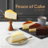

언론 속 이디야
이디야의 소식을 전해드립니다
| 순서 | 내용 | 날짜 |
|---|---|---|
| 999 |

[MTN] 이디야커피, 조각케이크 2종 출시 디저트 강화 이디야커피가 조각 케이크 신제품 2종과 기존 조각 케이크 3종을 리뉴얼해 출시하여 디저트 케이크 라인업을 강화하였다 |
|
| 998 |

[매일경제] 이디야커피, 공정거리조정원 '착한 프렌차이즈' 선정 이디야커피는 가맹점을 위해 상생정책을 시행한 노력을 인정받아 25일 공정거래조정원이 인증하는 '착한 프렌 |
|
| 997 | [매일경제] 이디야커피, 공정거래조정원 |
[매일경제] 이디야커피, 공정거리조정원 '착한 프렌차이즈' 선정 이디야커피는 가맹점을 위해 상생정책을 시행한 노력을 인정받아 25일 공정거래조정원이 인증하는 '착한 프렌 |
| 996 | [MTN] 이디야커피, 조각케이크 출시 |
[매일경제] 이디야커피, 공정거리조정원 '착한 프렌차이즈' 선정 이디야커피는 가맹점을 위해 상생정책을 시행한 노력을 인정받아 25일 공정거래조정원이 인증하는 '착한 프렌 |
| 995 |
[매일경제] 이디야커피, 공정거리조정원 '착한 프렌차이즈' 선정 이디야커피는 가맹점을 위해 상생정책을 시행한 노력을 인정받아 25일 공정거래조정원이 인증하는 '착한 프렌 |